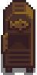
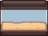

Anglerbedarf
| Anglerbedarf | |
 | |
 | |
| Öffnungszeiten: | 09:00 bis 17:00 |
| Ruhetage: | Regenfreie Samstage (Gebäude ist offen, kein Verkauf) |
| Bewohner: | |
Der Anglerbedarf ist das Zuhause von Willy. Es befindet sich auf dem Steg des Strandes, südlich von Pelikan Stadt. Der Laden kann ab dem 2. Frühling des 1. Jahres betreten werden. Obwohl die Tür an Samstagen geöffnet wird, bleibt der Laden geschlossen, es sei denn, es regnet Wetter. Mit Ausnahme des 13. Winters, dem zweiten Tag des Tintenfischfestes.
Willy bietet eine Vielzahl von Fisch-Hilfsmittel im Inneren zum Verkauf an, einschließlich verschiedener Angeln, Köder, Angelzubehör und Krabbenreusen. Weitere Waren werden verfügbar, sobald der Spieler seine Fähigkeit "Fischen" verbessert. Die Iridiumangel wird ab dem Moment angeboten, in dem Level 6 erreicht wurde (man muss keinen Tag warten).
Du kannst auch Fische oder Muscheln an Willy verkaufen, wenn er hinter seinem Tresen steht.
Obwohl die Tür offen ist, ist das Geschäft an einem Samstag geschlossen, allerdings nur, wenn es nicht regnet.
Angebot
Die folgenden Gegenstände sind verfügbar, sobald der Fischladen geöffnet ist: Forellensuppe, Gezielter Köder, Bambusstange, Übungsangel, Kleines Aquarium, Großes Aquarium, Hängender Fisch und Angler Doppelbett.
| Image | Name | Beschreibung | Preis | |
|---|---|---|---|---|
 |
Fischräucherer (Rezept) | Rezept für: Fischräucherer | N/A | |
| Forellensuppe | Ziemlich salzig. | 0 | ||
| Köder | Lässt Fische eher anbeißen. Muss zuerst an einer Angel angebracht werden. | 2 | ||
| Deluxe Köder | Sorgt dafür, das alle Fische noch schneller anbeißen und vergrößert den "Angelbalken". | 4 | ||
| Krabbenreuse | Lege sie ins Wasser, setze einen Köder hinein und schaue am nächsten Tag nach, ob du irgendetwas gefangen hast. Funktioniert in Flüssen, Seen und dem Ozean. | 3 | ||
| Spinner | Die Form bringt ihn dazu, sich im Wasser zu drehen. Erhöht die Beißrate von Fischen etwas. | 6 | ||
| Fallen-Fischköder | Fische entkommen langsamer, wenn du sie nicht einkurbelst. | 6 | ||
| Blei-Fischköder | Fügt Gewicht zur "Fischleiste" hinzu und verhindert damit, dass sie am Grund herumspringt. | 6 | ||
| Schatzjäger | Fische entkommen nicht, während Schätze eingesammelt werden. Erhöht auch die Chance, Schätze zu finden. | 7 | ||
| Korken-Fischköder | Vergrößert die "Fischleiste" etwas. | 7 | ||
| Widerhaken | Macht deinen Fang sicherer und bringt die "Fischleiste" dazu, sich an den Fisch zu heften. Funktioniert am besten bei langsamen, schwachen Fischen. | 8 | ||
| Verkleideter Spinner | Der metallene Anhänger und die farbenfrohen Luftschlangen sind ein verlockendes Spektakel für Fische. Erhöht die Beißrate von Fischen. | 8 | ||
| Verkleideter Spinner | Erhöht die Chance, beim Fischen Schätze zu finden. Allerdings mögen Fische den Geschmack nicht besonders. | 9 | ||
| Bambusstange | Am Wasser benutzen, um Fische zu fangen. | N/A | ||
| Fiberglasangel | Am Wasser benutzen, um Fische zu fangen. Erlaubt die Verwendung von Köder. | 2 | ||
| Iridiumangel | Am Wasser benutzen, um Fische zu fangen. Ermöglicht den Einsatz von Angelzubehör. | 6 | ||
| Übungsangel | Sie ist viel einfacher zu benutzen als andere Ruten, kann aber nur Basisfische fangen. | 0 | ||
| Kupferpfanne | Benutze sie, um Erze aus Strömungen zu gewinnen. | N/A | ||
|  | Großes Aquarium | Kann in deinem Haus platziert werden. | N/A | |
| Kleines Aquarium | Kann in deinem Haus platziert werden. | N/A | ||
| Deluxe-Aquarium | Kann in deinem Haus platziert werden. (Verfügbar nach "Tropische Fische" Spezialauftrag) |
N/A | ||
| Hängender Fisch | Kann in deinem Haus platziert werden. | N/A | ||
| Angler Doppelbett | Kann in deinem Haus platziert werden. | N/A |
Gezielter Köder
Jeden Tag verkauft Willy eine begrenzte Menge (8-12) eines Gezielten Köders (z. B. Welsköder, Sardinenköder) zum doppelten Verkaufspreis. Die Art der Köder, die Willy verkauft, hängt von der Jahreszeit ab. Nachfolgend eine Liste aller gezielten Köder, die Willy in jeder Saison verkaufen kann.
Einkäufe
Willy wird die folgenden Gegenstände vom Spieler kaufen: Alle Fisch, Köder, Angelzubehör, Sammelbares vom Strand (außer Seetang), Fischlaich und Tintenfisch Tinte.[1]
Er wird keine anderen fangbaren Gegenstände kaufen (Müll, Grünalge, Seetang, Weißalge, Höhlengelee, Flussgelee oder Seegelee). Er wird auch keinen gealterten Fischlaich, Kaviar oder geräucherten Fisch kaufen.
Spielerbasiertes Angebot
Wenn der Spieler Gegenstände aus seinem Inventar an Willy verkauft, können diese im Anglerbedarf wieder auftauchen, besonders dann wenn man große Mengen verkauft. Die Gegenstände werden nur in limitierter Stückzahl verkauft. Zusätzlich können die Dorfbewohner den Spieler darauf ansprechen, dass sie die Gegenstände gesehen oder gekauft haben.
Schwimmer-Automat

Auf der rechten Seite im Fischladen befindet sich eine Schwimmer-Automat, der es den Spielern ermöglicht, verschiedene Schwimmer-Stile auszuwählen. Neben der Auswahl eines bestimmten Schwimmer-Stils kann der Spieler auch eine zufällige Option auswählen. Mit jedem Wurf wählt diese zufällig einen Schwimmer aus allen freigeschalteten Optionen aus.
Zu Beginn des Spiels kann nur der Standard-Schwimmer-Stil gewählt werden. Jedes Mal, wenn der Spieler zwei neue Fische fängt, wird ein neuer Schwimmer-Stil freigeschaltet. Schwimmer-Stile werden immer der Reihe nach freigeschaltet. Beispielsweise wird der 10. Schwimmer-Stil freigeschaltet, nachdem der Spieler 18 verschiedene Fische gefangen hat.
Es gibt insgesamt 39 verschiedene Bobber-Stile zum Freischalten. Um alle Bobber-Stile freizuschalten, muss der Spieler insgesamt 76 verschiedene Fische fangen. Es gibt insgesamt 77 verschiedene Fische im Spiel (die 72 Fische im Tab des Menüs „Sammlungen“ und die 5 Legendären Fische II).
Willy's Boot
Nach der Reparatur des Gemeinschatszentrums oder des JojaMarktes sendet Willy dem Spieler eine Einladung in das Hinterzimmer seines Geschäfts. Bei der Ankunft findet der Spieler ein verstecktes Dock mit einem alten Boot, das repariert werden kann, um gegen eine Gebühr von  1.000 G zur Ingwerinsel zu fahren. Sobald das Boot repariert ist, werden die Türen des Geschäfts um 8 Uhr morgens geöffnet, obwohl Willys eigener Zeitplan unverändert bleibt. Er muss nicht im Laden sein, um mit dem Boot zu fahren.
1.000 G zur Ingwerinsel zu fahren. Sobald das Boot repariert ist, werden die Türen des Geschäfts um 8 Uhr morgens geöffnet, obwohl Willys eigener Zeitplan unverändert bleibt. Er muss nicht im Laden sein, um mit dem Boot zu fahren.
- Der Bootsrumpf benötigt
 Hartholz (200).
Hartholz (200). - Der Ticketschalter benötigt
 Batterie (5).
Batterie (5). - Der Iridiumanker benötigt
 Iridiumbarren (5).
Iridiumbarren (5).
Sobald der Spieler alle drei Bootsreparaturen durchgeführt hat, generiert das Spiel über Nacht eine Zwischensequenz, in der Willy und Robin daran arbeiten, das Boot wiederherzustellen. Die Zwischensequenz verzögert sich um einen Tag, wenn über dieselbe Nacht eine weitere Zwischensequenz geplant ist.
Ab dem Tag, nachdem der Spieler die Zwischensequenz zur Bootsreparatur mit Willy und Robin gesehen hat, kann er im Hinterzimmer ein Bootsticket kaufen. Die Tür zum Fischladen wird außerdem um 8 Uhr statt um 9 Uhr geöffnet. Nachdem der Spieler den Schlüssel zur Stadt erhalten hat, kann er jederzeit an normalen Tagen auf das Boot zugreifen. In beiden Fällen ändert sich Willys eigener Zeitplan nicht. Er steuert das Boot, steht aber automatisch zur Verfügung, wenn der Spieler ein Ticket kauft und muss nicht vorher im Shop sein.
Beim Angeln im Bootsraum besteht eine Chance von 20 %, einen Rettungsring zu fangen.[2]
Trivia
- Wenn man mit der Leiter im Laden interagiert, erhält man eine Nachricht, die suggeriert, dass Willy im Obergeschoss lebt.
- Wenn der Spieler am 1. Frühling im 1. Jahr versucht, den Fischladen zu betreten, steht an der Tür ein Zettel mit der Aufschrift "Mache Pause. Bin morgen wieder zurück".
- Nachdem der Laden geschlossen ist, kehrt Willy zum Laden zurück, normalerweise gegen 12:30 Uhr. Sobald er in den Laden zurückgekehrt ist, steht er an der Theke. Der Spieler kann nach dieser Zeit immer noch auf seinen Laden zugreifen, wenn er von der Ingwerinsel zurückkehrt oder den Schlüssel zur Stadt verwendet.
Galerie

Einrichtung
Referenzen
Geschichte
- 1.04: Fehler behoben, bei dem der Laden als Wasserstandort galt.
- 1.4: Spielerbasiertes Angebot hinzugefügt. Gegenstände, die der Spieler an Willy verkauft, tauchen im Anglerbedarf auf, nicht mehr in Pierres Gemischtwarenladen. Übungsangel und Kupferpfanne zum Angebot hinzugefügt.
- 1.5: Großes Aquarium, kleines Aquarium und Angler Doppelbett zum Lagerbestand hinzugefügt, Willys Boot hinzugefügt.
- 1.6: Deluxe Köder zum Lagerbestand hinzugefügt
- 1.6.9: Der Spieler kann nun ab Frühling 2 den Laden betreten, auch wenn er Willys Brief nicht gelesen hat. Fehler behoben, der es Angel Enthusiasten ermöglichte, Shop-Artikel frühzeitig freizuschalten. Die Fortgeschrittene Iridiumangel kann jetzt erworben werden, nachdem man sie in der Meisterungshöhle erhalten hat.
| Gebäude | ||
|---|---|---|
| Händler | Abenteurergilde • Anglerbedarf • Bruchbude • Buchhändler • Eisstand • Geheimes Walnusszimmer von Mr. Qi • Inselhändler • Joja-Markt • Kasino • Klinik • Kneipe • Marnies Ranch • Oase • Pierres Gemischtwarenladen • Reisewagen • Schmied • Schreinerladen • Turm des Zauberers • Vulkanzwerg • Wüstenhändler | |
| Häuser | Bauernhaus • Baumhaus • Bergstraße 24 • Elliotts Hütte • Flussstraße 1 • Flussstraße 2 • Haus des Bürgermeisters • Insel-Farmhaus • Leahs Hütte • Weidengasse 1 • Weidengasse 2 • Wohnwagen • Zelt | |
| Bauernhof Gebäude | Bauernhof | Brunnen • Fischteich • Gewächshaus • Hühnerstall • Hütte • Mühle • Pferdestall • Schleim-Stall • Schuppen • Silo • Stall |
| Spezial | Erdobelisk • Goldene Uhr • Hof-Obelisk • Insel-Obelisk • Junimo-Hütte • Wasserobelisk • Wüsten Obelisk | |
| andere Gebäude | Gemeinschaftszentrum • Hexenhütte • Hundehütte • Insel-Außenstelle • Joja-Warenhaus • Kanalisation • Kino • Museum • Spa | |